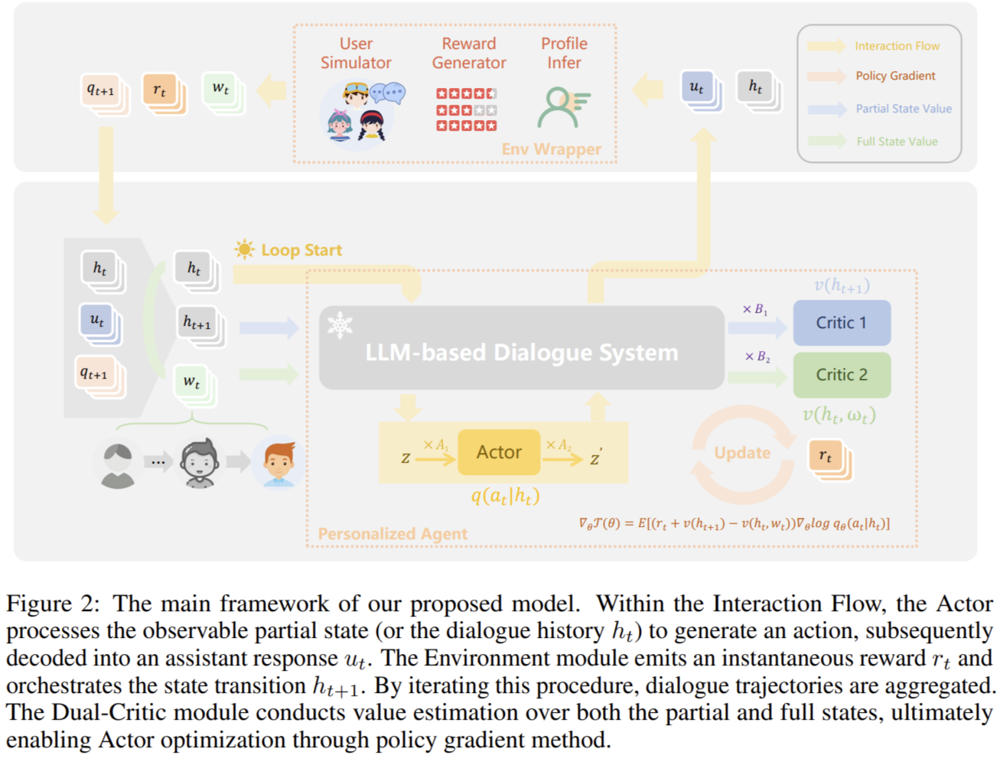

PAMDP: Interact to Persona Alignment via a Partially Observable Markov Decision Process
摘要 · Abstract
理解用户的个体差异并在交互中适配其偏好，比单纯遵循通用的人类价值对齐更贴近真实对话。 本文将这一「Interact to Persona Alignment」挑战形式化为一个部分可观测马尔可夫决策过程 （Persona Alignment MDP, PAMDP）：用户在交互中动态演化的画像，对助手而言是不可观测变量。 基于该形式化，我们提出一个双 Critic 强化学习框架，并以连续隐空间动作表示助手的话语。 在离线数据集与在线模拟器上的实验共同验证了方法的有效性。
🎯研究目的
RLHF 用单一奖励模型拟合所有人的偏好，无法捕捉用户间乃至同一用户在不同语境下的偏好异质性。 直接收集用户画像又受隐私与数据敏感性限制。本文要解决的核心问题是： 让助手仅靠多轮交互，逐轮推断不可见的用户画像，并以「更高的个性化对齐」为长期目标进行优化。
🧠研究方法
1
POMDP 建模：用户画像 ω 为不可观测环境上下文，对话历史 h 为可观测状态，助手为决策体；
推导 PAMDP 的 Bellman 方程（Theorem 1）。
2
非对称 Actor-Critic：Actor 只看观测 h；Critic 在训练时可看全部（含不可观测的 ω）——
即「离线学习、在线执行」范式。
3
Dual-Critic 优势估计：用 V(h) 与 V(h,ω) 两个价值函数构造 Advantage Â（Theorem 2），
证明其为无偏估计，同时在训练时充分利用 ω 的信息。
4
连续隐空间动作：助手的话语由隐空间动作解码生成；奖励由 Qwen2.5-72B 依当前画像对回复打分
（优 +1 / 平 +0.5 / 劣 −1）。
隐藏画像 ω→
对话历史 h→
V(h)+
V(h,ω)→
Advantage Â
📈实验结果
回复胜率 rω · PrefEval（Qwen2.5-7b，对比 Vanilla 的 win-rate）
论文 Table 2：PAMDP 显著优于 Prompt / FPFT / CoT / BC 等基线。
6 轮累计回报
论文 Table 3 趋势：PAMDP 1.74，超 UAAC、DCRL。
相对基线的累计回报增益
PAMDP 的优势幅度（越高越好）。
🖼️论文主图
